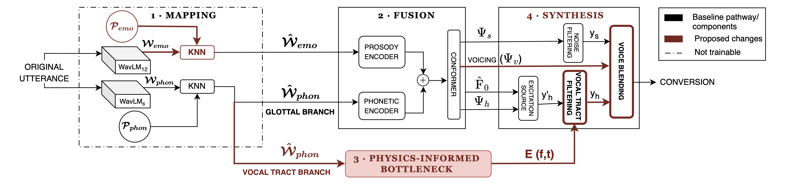

Abstract
Speech anonymisation aims to conceal the speaker's identity while retaining task-relevant information. Existing methods struggle with acoustic patterns rarely seen during training, such as dysfluencies in pathological speech. This fragility arises from purely data-driven spectral envelope estimation without physical constraints. We introduce Phy-VC, a voice conversion method that enforces articulatory-acoustic coupling as an inductive bias through a differentiable vocal tract resonance model. Trained on standard speech, Phy-VC improves intelligibility, prosody, and naturalness over state-of-the-art baselines on diverse speech patterns, including stuttering, dementia, elderly, and emotion datasets, while achieving effective anonymisation. Expert assessment confirms significant preservation of clinically relevant speech attributes. Further, the articulatory representation enables interpretable, systematic control of speaker variation.
System Overview
Webster's equation-based vocal tract surrogate with physics-constrained DDSP synthesis

Figure 1. Phy-VC overall architecture. Modules 1–4 show the pipeline from source utterance to converted speech. Red shading and arrows indicate components new to Phy-VC over the DDSP-QbE baseline. Prosodic feature mapping (in Module 1) is new over DDSP-QbE. In DDSP- QbE, the source prosodic embeddings (Wemo) is directly passed to the Fusion module. Normalised F0 and loudness features are also input to the Fusion module together with prosodic embeddings, following DDSP-QbE, but omitted for clarity, along with intermediate excitation signals.
SELECT A SPEECH CONDITION OR ANALYSIS TO EXPLORE RESULTS
(Stuttering → SD)
Source utterances from SEP-28k and FluencyBank datasets · Each one is anonymised to a female and a male voice · Dysfluencies and their severity should be preserved.
Select a condition below.
| Original Sample | Gender (Src → Tgt) |
kNN-VC | Emo-StarGAN | DDSP-QbE | Phy-VC (Ours) |
|---|
(Elderly → SD)
Source utterances from ADReSSo dataset · Vocal tremor, reduced articulatory precision, and dysfluencies should be preserved.
Select a condition below.
Dementia diagnosed elderly speakers.
| Original Sample | Gender (Src → Tgt) |
kNN-VC | Emo-StarGAN | DDSP-QbE | Phy-VC (Ours) |
|---|
(SD → SD)
Source utterances from healthy young speakers from ESD and LibriSpeech datasets · No pathology should be introduced.
| Original Sample | Gender (Src → Tgt) |
kNN-VC | Emo-StarGAN | DDSP-QbE | Phy-VC (Ours) |
|---|
Demonstrating explicit physical control · Select an experiment below.
Same source utterance re-synthesised at different VTL scaling factors · Listen for perceived speaker size changes while content and dysfluencies are preserved.
| Sample |
SHORTER VTL
|
||||||
|---|---|---|---|---|---|---|---|
| −1.0 | −0.6 | −0.3 | 0 (Neutral) | +0.3 | +0.6 | +1 | |